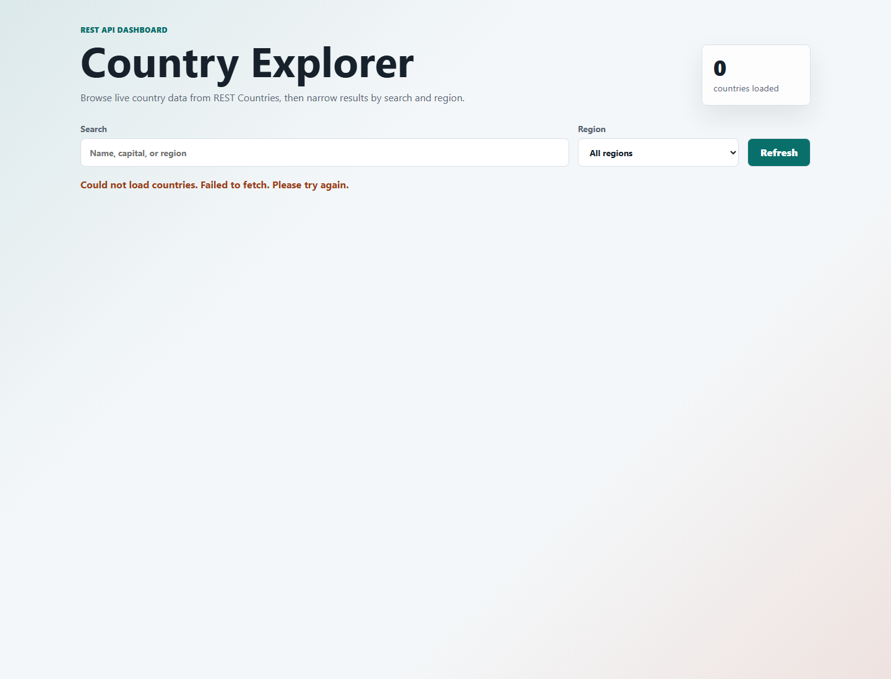
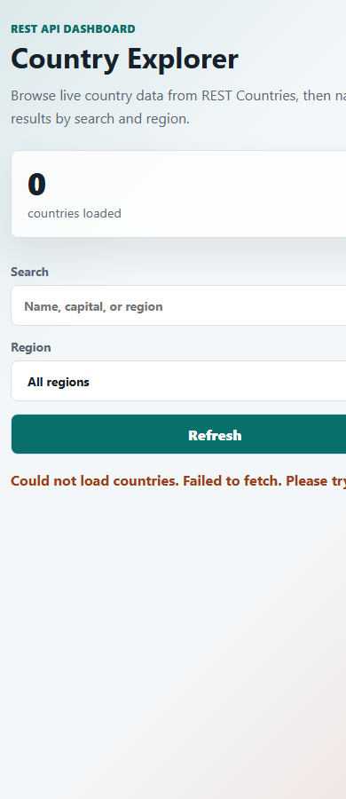

Task 3: Public REST API Project Report
This document summarizes the Country Explorer project created for the task requirement: use a public REST API to fetch and display data dynamically on a web page.
API Used
The project uses the public REST Countries API. The app requests selected fields for all countries:
https://restcountries.com/v3.1/all?fields=name,capital,region,population,flags,currencies,cca3
The response includes country names, capitals, regions, populations, flags, and currencies. The page sorts and renders the returned data as cards, then updates the visible list when the user searches or filters by region.
Features Implemented
- Fetch API request to a public REST endpoint
- Dynamic country cards generated from API data
- Loading state while the request is in progress
- Error state if the API request fails
- Search by country name, capital, or region
- Region filter generated from the API response
- Responsive layout for desktop and mobile screens
Commands Used
node --check script.js node --check static-server.cjs npm start
Key Code Snippets
Fetch API Request
async function fetchCountries() {
setLoading(true);
setStatus("Loading country data...");
try {
const response = await fetch(API_URL);
if (!response.ok) {
throw new Error(`REST Countries returned ${response.status}`);
}
const data = await response.json();
countries = data.sort((a, b) =>
getCountryName(a).localeCompare(getCountryName(b)),
);
populateRegions();
renderCountries();
} catch (error) {
countries = [];
setStatus(
`Could not load countries. ${error.message}. Please try again.`,
"error",
);
} finally {
setLoading(false);
}
}
Search and Region Filter
function getFilteredCountries() {
const query = searchInput.value.trim().toLowerCase();
const selectedRegion = regionFilter.value;
return countries.filter((country) => {
const searchableText = [
getCountryName(country),
getCapital(country),
country.region ?? "",
]
.join(" ")
.toLowerCase();
const matchesSearch = searchableText.includes(query);
const matchesRegion =
selectedRegion === "all" || country.region === selectedRegion;
return matchesSearch && matchesRegion;
});
}
Screenshots


Deployment Notes
This is a static frontend project. It can be deployed on GitHub Pages, Netlify, or Vercel. After deployment, replace the hosted project and GitHub repository placeholders above with the final links.